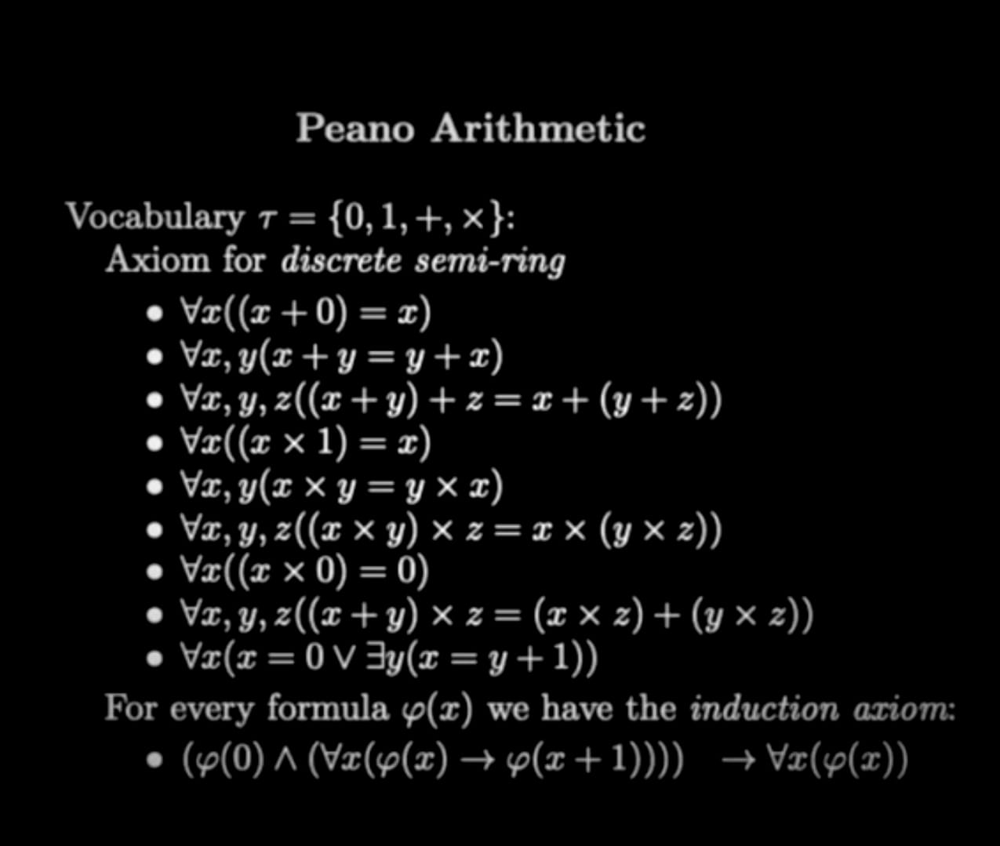

Mathematical Logic and the Philosophy of Life
Table of Contents
Peano Arithmetic
Exploring Extraterrestrial Life
Or, how to prove that there are other forms of life in the universe, without - or before - finding other life forms.
Perhaps you imagine that discussing mathematical logic and the Fermi Paradox would not fit into a LinkedIn post.
I accept the challenge, with the possibility of making a fool of myself.
Given that our time is short, I present all the first 9 axiomatic sentences from the image, leaving the last line for the reader to ponder.
I will focus on dissecting the last proposition, and only it. For there lies a not-so-obvious line, which has implications for the question: Are we alone in the universe?
\begin{equation} \begin{aligned} \left( F(0) \land \forall x (F(x) \implies F(x+1)) \right) &\implies \forall x (F(x)) \end{aligned} \end{equation}
Let me explain...
Dissecting the Proposition
Let's look at the left side of the expression.
We need to try to contextualize the meaning of the predicates.
Predicate ( F(0) ): There is life (on Earth), and this is case zero; empirical and tautological.
Now, we have:
$$ \forall x (F(x) \implies F(x+1)) $$
What would it mean for this to be true?
In words: if I know that a condition ( F ) has the following property: if it is true for ( x ), it must necessarily be true for ( x+1 ).
In our example, what would be the contextual condition?
"If the physics of the universe implies life, then necessarily". In other words, "given that we find a planetary system that can have life, it will necessarily be a case of life". This would be the positive meaning of this proposition in this hypothetical context.
Note: This may or may not be factually true.
Suppose such a theory has been formulated and proven in a "laboratory" and replicated! And it is as well-established a scientific fact as the Pythagorean theorem.
Logically, if there is life on our planet, and every planetary system that can have life will have it. Then, in a universe with infinite planetary systems in conditions similar to ours, there will be multiple occurrences of life.
Thus, we conclude
$$ \forall x (F(x)) $$
Throughout our universe, which has infinite possibilities of life, there are (infinite) forms of life inhabiting it.
\begin{equation} \begin{aligned} \left( F(0) \land \forall x (F(x) \implies F(x+1)) \right) &\implies \forall x (F(x)) \end{aligned} \end{equation}
Q.E.D.
Conclusion
Disclaimer: This text is a reflection on how we can reach conclusions about a topic of space exploration without leaving Earth. Using logic. This text does not aim to prove that there is other life. Nor that the theory that would allow such a conclusion has already been formulated and proven. Nor that any such life will necessarily exist.